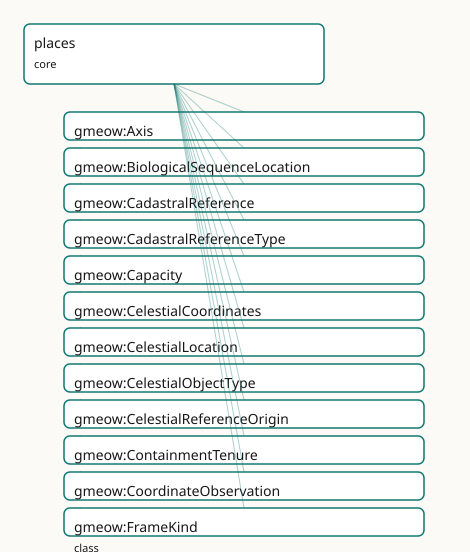

GMEOW Locations Module
- IRI: https://blackcatinformatics.ca/gmeow/slices/places
- Tier: core
Group: core
What This Slice Covers
This slice owns 496 terms and contributes 369 mapping or projection rows. Use it when its terms match the native fact you want to preserve; use the linkage tables to see how those facts leave GMEOW for consumer vocabularies.
Dependencies
gmeow:slices/coreferencegmeow:slices/documentsgmeow:slices/kernelgmeow:slices/lifecyclegmeow:slices/observationsgmeow:slices/rightsgmeow:slices/temporal
Consumers
- Every located fact: contacts, events, the mail corpus, jurisdiction tenures; the GeoSPARQL projection.
Local Map

Examples
Located Place
- Source:
slices/core/places/examples/located-place.ttl - GMEOW terms:
gmeow:CoordinateObservation,gmeow:GeoCoordinates,gmeow:Organization,gmeow:Place,gmeow:assertedAt,gmeow:authorityLink,gmeow:confidence,gmeow:containedInPlace,gmeow:coordinateObservationOf,gmeow:coordinateResult - External prefixes:
owl,skos,wd,xsd
# SPDX-FileCopyrightText: 2026 Blackcat Informatics® Inc. <paudley@blackcatinformatics.ca>
# SPDX-License-Identifier: CC-BY-4.0
#
# Worked example: places as first-class located things, not address strings
# . A containment hierarchy (country ⊃ region ⊃ city ⊃ site) carries
# placeType, gazetteer coreference (authorityLink + skos:exactMatch, never
# owl:sameAs — P5), and coordinates two ways: the flat gmeow:hasCoordinates for
# the 80% case, and a reified gmeow:CoordinateObservation that makes the Principle
# 11 reference frame EXPLICIT (a latitude is meaningless without the frame it is
# expressed in) and carries the measurement's vantage, method, and confidence.
@prefix gmeow: <https://blackcatinformatics.ca/gmeow/> .
@prefix ex: <https://blackcatinformatics.ca/gmeow/examples/places/> .
@prefix wd: <http://www.wikidata.org/entity/> .
@prefix skos: <http://www.w3.org/2004/02/skos/core#> .
@prefix xsd: <http://www.w3.org/2001/XMLSchema#> .
# --- The containment spine: each place is a first-class Place, related by
# gmeow:containedInPlace, with gazetteer alignment by reference.
ex:canada a gmeow:Place ;
gmeow:name "Canada"@en ;
gmeow:placeType gmeow:placeTypeCountry ;
gmeow:authorityLink wd:Q16 ;
skos:exactMatch wd:Q16 .
ex:alberta a gmeow:Place ;
gmeow:name "Alberta"@en ;
gmeow:placeType gmeow:placeTypeRegion ;
gmeow:containedInPlace ex:canada ;
gmeow:authorityLink wd:Q1951 ;
skos:exactMatch wd:Q1951 .
ex:edmonton a gmeow:Place ;
gmeow:name "Edmonton"@en ;
gmeow:placeType gmeow:placeTypeCity ;
gmeow:containedInPlace ex:alberta ;
gmeow:authorityLink wd:Q2096 ;
skos:exactMatch wd:Q2096 ;
# The flat coordinate shortcut: a GeoCoordinates point, no provenance needed.
gmeow:hasCoordinates ex:edmontonCoords .
ex:edmontonCoords a gmeow:GeoCoordinates ;
gmeow:latitude "53.5461"^^xsd:decimal ;
gmeow:longitude "-113.4938"^^xsd:decimal .
# --- A surveyed site, with the reified observation form: the SAME place can
# carry competing measurements (different vantage/method/confidence), each in
# its explicit reference frame; none is privileged (P9).
ex:officeSite a gmeow:Place ;
gmeow:name "Blackcat office site"@en ;
gmeow:placeType gmeow:placeTypeSite ;
gmeow:containedInPlace ex:edmonton .
ex:surveyTeam a gmeow:Organization ;
gmeow:name "Precision Survey Co."@en .
ex:officeGpsFix a gmeow:CoordinateObservation ;
gmeow:coordinateObservationOf ex:officeSite ;
gmeow:vantage ex:surveyTeam ;
gmeow:observationMethod gmeow:methodGPS ;
gmeow:coordinateResult ex:officeCoords ;
gmeow:hasReferenceFrame gmeow:referenceFrameWGS84 ;
gmeow:confidence 0.95 ;
gmeow:assertedAt "2026-03-10T00:00:00Z"^^xsd:dateTime .
ex:officeCoords a gmeow:GeoCoordinates ;
gmeow:latitude "53.5443"^^xsd:decimal ;
gmeow:longitude "-113.4909"^^xsd:decimal ;
gmeow:elevation "645.0"^^xsd:decimal .
Terms
Classes
| Term | Label | Definition |
|---|---|---|
gmeow:Axis |
Axis | A coordinate axis or dimension of a reference frame (e.g. X, Y, Z, latitude, longitude, elevation, time). |
gmeow:BiologicalSequenceLocation |
Biological Sequence Location | A sequence-level container locus — a chromosome, contig, scaffold, or the sequence itself — that hosts SequenceFeature annotations via gmeow:hasSequenceFeature... |
gmeow:CadastralReference |
Cadastral Reference | A structured identifier for a land-administration record — a parcel number, folio identifier, title number, lot reference, or survey plan reference issued by a... |
gmeow:CadastralReferenceType |
Cadastral Reference Type | The kind of a cadastral reference (parcel identifier, folio number, title number, lot number, survey plan reference, etc.). A value, not a subclass: the set is... |
gmeow:Capacity |
Capacity | A measurement of the maximum number of entities a location can hold. The location is the observedFeature; the result is a ScalarQuantity. The entity kind being... |
gmeow:CelestialCoordinates |
Celestial Coordinates | A point on the celestial sphere expressed as right ascension, declination, and an optional epoch — frame-relative per Principle 11. The reference frame (ICRS,... |
gmeow:CelestialLocation |
Celestial Location | An astronomical location — a position on the celestial sphere, a solar-system body, a spacecraft, or a deep-sky object. The specific kind is given by gmeow:cel... |
gmeow:CelestialObjectType |
Celestial Object Type | The kind of an astronomical object (star, galaxy, nebula, planet, asteroid, spacecraft, etc.). A value, not a CelestialLocation subclass: the set is open-ended... |
gmeow:CelestialReferenceOrigin |
Celestial Reference Origin | The origin of a celestial coordinate system (topocentric, geocentric, barycentric, heliocentric, etc.). A value vocabulary aligned to IVOA refposition. |
gmeow:ContainmentTenure |
Containment Tenure | The reified, time-scoped fact that a place was contained in a larger place over an interval — for boundary changes, re-organisations, and disputed parallel par... |
gmeow:CoordinateObservation |
Coordinate Observation | A spatial measurement that assigns geographic coordinates or geometry to a place. Reifies the act of coordinate assignment so that multiple surveys (GPS 2023,... |
gmeow:FrameKind |
Frame Kind | The structural type of a reference frame (e.g. geodetic, Cartesian, polar, grid, narrative). |
gmeow:FrameRealm |
Frame Realm | The physical, virtual, or conceptual domain of a reference frame (e.g. terrestrial, indoor, celestial, virtual, measurement, currency, temporal, colourspace, l... |
gmeow:GeoCoordinates |
Geo Coordinates | A geographic point expressed as latitude, longitude, and optional elevation. |
gmeow:Geocode |
Geocode | A geographic location code expressed in an alternative geocoding reference frame — a Plus Code, what3words address, geohash, MGRS grid reference, UN/LOCODE, or... |
gmeow:Geometry |
Geometry | The spatial extent of a place — a point, line, or polygon — carrying a Well-Known Text (WKT) serialization for shapes richer than a single point (the GeoSPARQL... |
gmeow:GeometryType |
Geometry Type | The structural kind of a geometry (point, line, polygon, multipoint, multilinestring, multipolygon). A value vocabulary (individuals, never subclasses) aligned... |
gmeow:JurisdictionTenure |
Jurisdiction Tenure | The reified, time-scoped fact that a place was governed by a particular polity over an interval — a sovereignty or administrative jurisdiction claim. Non-funct... |
gmeow:LandTenure |
Land Tenure | The reified, time-scoped fact that a party holds rights over a place — ownership, lease, easement, mortgage, usufruct, or another property right. Bridges the l... |
gmeow:LandTenureType |
Land Tenure Type | The kind of a land tenure (ownership, leasehold, easement, mortgage, usufruct, freehold, crown lease, etc.). A value, not a subclass: the set is open-ended and... |
gmeow:Location |
Location | A locus where an entity can be situated, reside, or occur — a geographic place, an online (virtual) location, a digital storage location, or an astronomical/ce... |
gmeow:LocationState |
Location State | The state of a moving entity at a specific point or period in time, including its location, velocity, and pose (position + orientation). |
gmeow:MetricKind |
Metric Kind | The computational method by which distance or dissimilarity is measured in a reference frame — geodesic (curved surface), Euclidean (straight-line in Cartesian... |
gmeow:NetworkAddress |
Network Address | A network-layer address or locator expressed as a coordinate in a network reference frame — an IP address, MAC address, DNS name, URL, port number, or BGP auto... |
gmeow:NetworkAddressType |
Network Address Type | The kind of a network address (IPv4, IPv6, MAC, DNS, URL, port, BGP-AS). A value, not a subclass: the set is open-ended and they share all of NetworkAddress's... |
gmeow:Occupancy |
Occupancy | A measurement of the current number of entities located at or within a location. The location is the observedFeature; the result is a ScalarQuantity. Typically... |
gmeow:Orientation |
Orientation | The rotational component of a pose, expressed as co-equal optional facets: quaternion (x, y, z, w), Euler angles (yaw, pitch, roll plus order), or compass angl... |
gmeow:Place |
Place | A geographic location at any granularity — a country, region, city, thoroughfare, site, building, floor, or room. The specific kind is given by gmeow:placeType... |
gmeow:PlaceType |
Place Type | The kind of a geographic place (country, region, city, building, room, …). Modelled as a value, not a Place subclass: the set of kinds is open-ended (GeoNames... |
gmeow:Pose |
Pose | A frame-relative position and orientation of an object — a 6-DOF pose. A pose consists of a position (spatial coordinates in a reference frame) and an orientat... |
gmeow:ProximityMeasurement |
Proximity Measurement | A measurement of distance, dissimilarity, or proximity between two entities, expressed as a scalar quantity in a reference frame that declares its metric kind.... |
gmeow:ReferenceFrame |
Reference Frame | A reference system (such as a coordinate system, datum, grid, or platform space) relative to which locations, coordinates, or measurements are expressed. |
gmeow:RegulatoryOverlay |
Regulatory Overlay | The reified, time-scoped fact that a specific regulation applies over a place — imposed by an authority. Covers zoning, protected areas, restricted airspace, s... |
gmeow:RegulatoryOverlayType |
Regulatory Overlay Type | The kind of a regulatory overlay (zoning, protected area, restricted airspace, sanctions, tax district, electoral district, postal zone, civil-time zone, …). A... |
gmeow:SequenceCoordinates |
Sequence Coordinates | Frame-relative coordinates on a biological sequence: a start position, an end position, and a strand orientation, all expressed relative to an explicit referen... |
gmeow:SequenceFeature |
Sequence Feature | A feature or annotation on a biological sequence — a range with start, end, strand, and type, expressed in a reference assembly frame. The first-class entity t... |
gmeow:SequenceFeatureType |
Sequence Feature Type | The kind of a sequence feature (gene, exon, intron, CDS, SNP, chromosome, etc.). A value, not a subclass: the set is open-ended (Sequence Ontology lists ~2000... |
gmeow:SpatialCoordinates |
Spatial Coordinates | A set of coordinate values representing a position in a specific coordinate reference frame. |
gmeow:SpatialMeasurement |
Spatial Measurement | A measurement that assigns a spatial property — coordinates, geometry, pose, or spatial extent — to a feature of interest. The parent of CoordinateObservation... |
gmeow:StorageLocation |
Storage Location | A locus where digital objects reside — a cloud-storage folder, an object-store bucket, a filesystem path, a content-addressed store, or a physical disk. Its me... |
gmeow:StorageMedium |
Storage Medium | The kind of medium a storage location uses (cloud service, local filesystem, object store, content-addressed store, physical disk, removable media). A value, n... |
gmeow:StrandOrientation |
Strand Orientation | The strand direction of a feature on a double-stranded biological sequence (forward / Watson, reverse / Crick, or both). A value, not a subclass: the set is cl... |
gmeow:Trajectory |
Trajectory | A continuous path of motion representing the space-time history of a moving entity. |
gmeow:Utilization |
Utilization | A measurement of the ratio of current occupancy to maximum capacity at a location, typically expressed as a ratio (0–1) or percentage. The location is the obse... |
gmeow:VirtualLocation |
Virtual Location | A non-geographic location reachable online — a video-conference room, chat space, metaverse room, website, or social media page. The specific kind is given by... |
gmeow:VirtualLocationType |
Virtual Location Type | The kind of a virtual location (video conference, chat space, metaverse room, website, social media page, …). A value, not a subclass: the set is open-ended an... |
Properties
| Term | Label | Definition |
|---|---|---|
gmeow:accessUrl |
access URL | The join/access URL of a virtual location. |
gmeow:adjacentTo |
adjacent to | Relates a location to another location it is adjacent to. |
gmeow:asGeoJSON |
as GeoJSON | A GeoJSON serialization of a geometry. The range is rdfs:Literal (not geo:geoJSONLiteral) to stay within the OWL 2 DL datatype map; data may still tag the lite... |
gmeow:asWKT |
as WKT | A Well-Known Text (WKT) serialization of a geometry. The range is rdfs:Literal (not geo:wktLiteral) to stay within the OWL 2 DL datatype map; data may still ta... |
gmeow:bearing |
bearing | The angle between an entity's forward direction and a reference direction (typically north), in degrees. |
gmeow:capacityOf |
capacity of | The location whose capacity is measured. Functional: a capacity measurement concerns exactly one location (constitutive of the measurement's identity). |
gmeow:celestialEpoch |
celestial epoch | The epoch (Julian year, e.g. 2000.0) for which the coordinates are expressed. Required for proper-motion propagation; frame-relative per Principle 11. |
gmeow:celestialObjectType |
celestial object type | The kind(s) of a celestial location (one or more gmeow:CelestialObjectType individuals). Non-functional: multi-source classifications may differ (e.g. a source... |
gmeow:containedInLocation |
contained in location | Relates a location to a larger location that contains it; transitive. A spatial/topological specialization of the universal gmeow:partOf spine. |
gmeow:containedInPlace |
contained in place | Relates a place to a larger place that geographically contains it; transitive. Chains the nested granularity (room ⊂ building ⊂ city ⊂ region ⊂ country), each... |
gmeow:containmentChild |
containment child | The contained (child) place in this containment tenure. Functional: a tenure concerns exactly one child place. |
gmeow:containmentParent |
containment parent | The containing (parent) place in this containment tenure. Functional: a single tenure has exactly one parent place. |
gmeow:containsPlace |
contains place | The inverse of gmeow:containedInPlace — a place that geographically contains another place. Under OWL 2 semantics, transitivity is entailed because containedIn... |
gmeow:coordinateFrame |
coordinate frame | Relates a set of coordinates to the reference frame they are expressed in. |
gmeow:coordinateObservationOf |
coordinate observation of | The place whose coordinates or geometry are being observed — the observedFeature of a coordinate observation. Subproperty of gmeow:spatialMeasurementOf (itself... |
gmeow:coordinateResult |
coordinate result | The GeoCoordinates result of a coordinate observation — a point expressed as latitude, longitude, and optional elevation. The reference frame in which the coor... |
gmeow:currencyCode |
currency code | The canonical short code of a currency reference frame (a member of gmeow:frameRealmCurrency) — the ISO 4217 alphabetic code for fiat currencies (USD, EUR, CAD... |
gmeow:declination |
declination | Declination in degrees (−90 to +90). Frame-relative: the meaning depends on the coordinateFrame. |
gmeow:determinacyModel |
determinacy model | Relates a reference frame to its default determinacy model. |
gmeow:dimensionCount |
dimension count | The number of dimensions spanned by a reference frame. |
gmeow:elevation |
elevation | Elevation above sea level in metres. |
gmeow:eulerOrder |
Euler order | The order of rotations for the Euler-angle representation (e.g., 'XYZ', 'ZYX', 'ZXZ'). |
gmeow:frameKind |
frame kind | Relates a reference frame to its structural frame kind. |
gmeow:frameRealm |
frame realm | Relates a reference frame to the realm it describes. |
gmeow:frameSolver |
frame solver | Identifies the external solver or transformation method to resolve coordinates in this frame. |
gmeow:geocodeFrame |
geocode frame | The geocoding reference frame in which this code is expressed. Functional: a geocode is expressed in exactly one frame. |
gmeow:geocodeValue |
geocode value | The string value of a geocode in its reference frame — the canonical literal carrier. Per-system properties (plusCode, what3words, …) are convenience accessors... |
gmeow:geohash |
geohash | A geohash string — a hierarchical spatial indexing system encoding latitude and longitude into a base32 string (e.g. 'u4pruydqqvj'). |
gmeow:geometryDeterminacy |
geometry determinacy | The ontic determinacy model of a geometry's boundary — crisp (surveyed), vague (approximate), fuzzy (probabilistic), or disputed. Non-functional: competing sou... |
gmeow:geometryResult |
geometry result | The Geometry result of a coordinate observation — a point, line, or polygon expressed as WKT or GeoJSON. The reference frame is carried on the observation and... |
gmeow:geometryType |
geometry type | The structural kind of a geometry (a gmeow:GeometryType individual). Non-functional: competing source classifications may differ (e.g. polygon vs multipolygon)... |
gmeow:hasAxis |
has axis | Relates a reference frame to one of its coordinate axes. |
gmeow:hasCadastralReference |
has cadastral reference | Relates a place (typically a parcel, lot, or spatial unit) to a structured cadastral reference issued by a registry. |
gmeow:hasCapacity |
has capacity | Links a location to a capacity measurement describing the maximum number of entities it can hold. Flat form for the common case; promote to full reified Capaci... |
gmeow:hasCelestialCoordinates |
has celestial coordinates | Relates a celestial location to its equatorial or other sky coordinates. |
gmeow:hasCentroid |
has centroid | The geometric centroid of a place — a flat shortcut for the common case. The full relator form is a SpatialAggregation with aggregationFunction aggCentroid, ca... |
gmeow:hasCoordinateMatrix |
has coordinate matrix | Specifies a transformation or projection matrix associated with a coordinate axis, a homogeneous 4×4 pose matrix combining translation and rotation, a general... |
gmeow:hasCoordinateObservation |
has coordinate observation | Links a place to a coordinate observation that assigned coordinates or geometry to it. Non-functional: multiple surveys (GPS, LiDAR, total station) may coexist... |
gmeow:hasCoordinates |
has coordinates | Relates a place to its geographic point coordinates. Flat shortcut for the common case; the full relator form is a CoordinateObservation linking the place to a... |
gmeow:hasGeocode |
has geocode | Relates a place to an alternative geocoding identifier expressed in a specific reference frame. Non-functional: a place may have multiple geocodes in different... |
gmeow:hasGeometry |
has geometry | Relates a place to its spatial geometry (point, line, or polygon). Flat shortcut for the common case; the full relator form is a CoordinateObservation linking... |
gmeow:hasMetricKind |
has metric kind | The distance or dissimilarity metric declared by this reference frame. Functional: a frame uses exactly one metric kind for all proximity computations expresse... |
gmeow:hasNetworkAddress |
has network address | Relates a virtual location to a network address that locates it within a network topology. |
gmeow:hasOccupancy |
has occupancy | Links a location to an occupancy measurement describing the current number of entities located at it. Flat form for the common case; promote to full reified Oc... |
gmeow:hasPose |
has pose | Associates an entity with a frame-relative pose (position + orientation). |
gmeow:hasPoseOrientation |
has pose orientation | The rotational component of a pose. |
gmeow:hasPosePosition |
has pose position | The translational component of a pose, expressed as spatial coordinates in the pose frame. |
gmeow:hasReferenceFrame |
has reference frame | Relates an entity or value to the reference frame in which it is expressed. |
gmeow:hasReferencePosition |
has reference position | The origin position of a celestial reference frame (topocentric, geocentric, barycentric, heliocentric). Functional: a frame has exactly one reference position. |
gmeow:hasSequenceCoordinates |
has sequence coordinates | Links a sequence feature to its frame-relative coordinates. Non-functional: competing coordinate claims from different assemblies or alignment methods coexist... |
gmeow:hasSequenceFeature |
has sequence feature | Links a biological sequence location to a feature annotation on that sequence. Non-functional: a single location may carry multiple features (overlapping genes... |
gmeow:hasSpatialMeasurement |
has spatial measurement | Links an entity to a spatial measurement describing its coordinates, geometry, pose, or spatial extent. Flat form for the common case; promote to full reified... |
gmeow:hasTimeScale |
has time scale | The time standard associated with a celestial reference frame. Functional: a frame uses exactly one time scale. |
gmeow:hasTrajectorySample |
has trajectory sample | A discrete location-state sample composing this trajectory. Non-functional: a trajectory typically has many samples, and multiple sampling strategies (e.g. GPS... |
gmeow:hasUtilization |
has utilization | Links a location to a utilization measurement describing the ratio of occupancy to capacity. Flat form for the common case; promote to full reified Utilization... |
gmeow:heading |
heading | The compass direction an entity is facing, typically clockwise from north, in degrees. |
gmeow:inReferenceAssembly |
in reference assembly | The reference assembly (e.g. GRCh38) in which these sequence coordinates are expressed. Functional: a coordinate tuple is expressed in exactly one assembly; co... |
gmeow:isHostedBy |
is hosted by | Relates a reference frame to the entity that hosts it — the entity whose existence bounds the frame's existence. A local grid is hosted by its building; a robo... |
gmeow:jurisdictionDeterminacy |
jurisdiction determinacy | The ontic determinacy model of this jurisdiction claim — crisp (well-defined border), vague (approximate boundary), fuzzy (probabilistic membership), or disput... |
gmeow:jurisdictionPlace |
jurisdiction place | The place whose governance is recorded by this JurisdictionTenure. Functional: a tenure concerns exactly one place (constitutive of the situation's identity). |
gmeow:jurisdictionPolity |
jurisdiction polity | The governing polity (state, administrative body, or organization) that held jurisdiction over the place during this tenure. Functional: a single tenure has ex... |
gmeow:latitude |
latitude | The latitude of a geographic point in decimal degrees. |
gmeow:locatedAt |
located at | Relates an entity to a location it is situated at, resides in, or occurs at — geographic, virtual, or storage. |
gmeow:longitude |
longitude | The longitude of a geographic point in decimal degrees. |
gmeow:mgrs |
MGRS | A Military Grid Reference System coordinate — a geocoordinate standard used by NATO militaries (e.g. '33TWN00020001'). |
gmeow:mileMarker |
mile marker | A linear-referencing mile-marker or chainage — a distance-along-a-line coordinate on a linear feature such as a road, railway, or pipeline (e.g. '42.3'). The u... |
gmeow:networkAddressFrame |
network address frame | The network reference frame in which this address is expressed. Functional: an address is expressed in exactly one frame. |
gmeow:networkAddressType |
network address type | The kind of a network address (a gmeow:NetworkAddressType individual). Non-functional: competing classifications coexist (Principle 9). |
gmeow:networkAddressValue |
network address value | The literal string value of a network address (e.g. '192.0.2.1', '00:1B:44:11:3A:B7', 'example.com', '443'). Functional: an address has exactly one value strin... |
gmeow:occupancyOf |
occupancy of | The location whose occupancy is measured. Functional: an occupancy measurement concerns exactly one location (constitutive of the measurement's identity). |
gmeow:overlayAuthority |
overlay authority | The authority (government body, international organization, regulatory agency, or indigenous council) that imposed this regulatory overlay. Functional: a singl... |
gmeow:overlayDesignator |
overlay designator | The code or designator assigned to this regulatory overlay by its authority — an ICAO airspace identifier, a NOTAM number, a fisheries zone code, etc. Function... |
gmeow:overlayDeterminacy |
overlay determinacy | The ontic determinacy model of this regulatory overlay's boundary — crisp (surveyed), vague (approximate), fuzzy (probabilistic), or disputed. Non-functional:... |
gmeow:overlayLowerBound |
overlay lower bound | The lower bound of this regulatory overlay in a vertical dimension (altitude, depth, elevation), expressed as a ScalarQuantity with unit (QUDT) and reference f... |
gmeow:overlayPlace |
overlay place | The place over which this regulatory overlay applies. Functional: an overlay concerns exactly one place (constitutive of the situation's identity). The place c... |
gmeow:overlayRegulation |
overlay regulation | The machine-readable rights statement (permissions, prohibitions, duties) that governs activity within this overlay. Links to the rights facility by refere... |
gmeow:overlayType |
overlay type | The kind(s) of regulatory overlay (a gmeow:RegulatoryOverlayType individual). Non-functional: a single overlay may be classified by multiple sources as differe... |
gmeow:overlayUpperBound |
overlay upper bound | The upper bound of this regulatory overlay in a vertical dimension (altitude, depth, elevation), expressed as a ScalarQuantity with unit (QUDT) and reference f... |
gmeow:parentFrame |
parent frame | Relates a reference frame to its parent frame in a hierarchy. |
gmeow:physicalPlace |
physical place | The geographic place where a storage location's device physically sits (e.g. the room holding a disk). Absent for purely cloud storage. |
gmeow:pitch |
pitch | Rotation about the lateral (typically y) axis, in degrees or radians as indicated by the reference frame. |
gmeow:placeDeterminacy |
place determinacy | The ontic determinacy model of a place's existence or boundary — crisp, vague, fuzzy, probabilistic, or disputed. Non-functional: in a multi-source merge, sour... |
gmeow:placeSupersededBy |
place superseded by | Links a place to the place that replaced it — Constantinople placeSupersededBy Istanbul, a merged municipality placeSupersededBy its successor. Directional. Th... |
gmeow:placeSupersedes |
place supersedes | Links a newer place to a prior one it supersedes. Inverse of gmeow:placeSupersededBy. Non-functional: one successor may consolidate several predecessors. |
gmeow:placeType |
place type | The kind(s) of a place (one or more gmeow:PlaceType individuals). Non-functional: multi-source classifications may differ (a place that is both 'city' and 'adm... |
gmeow:plusCode |
Plus Code | An Open Location Code (Plus Code) — a geocoding system using alphanumeric codes to identify any location on Earth (e.g. '9F4W9C8C+W4'). |
gmeow:poseFrame |
pose frame | The coordinate reference frame in which the pose position and orientation are expressed. |
gmeow:proximity |
proximity | Links an entity to a proximity measurement describing its distance or dissimilarity to another entity. The measurement carries the scalar value (via observatio... |
gmeow:proximityTo |
proximity to | The target entity to which proximity is measured. Functional: a different target entity is a different proximity measurement (constitutive of the relator's ide... |
gmeow:quaternionW |
quaternion W | The w (scalar) component of a unit quaternion representing orientation. |
gmeow:quaternionX |
quaternion X | The x component of a unit quaternion representing orientation. |
gmeow:quaternionY |
quaternion Y | The y component of a unit quaternion representing orientation. |
gmeow:quaternionZ |
quaternion Z | The z component of a unit quaternion representing orientation. |
gmeow:rcc8dc |
rcc8 dc | RCC-8: Disconnected (DC) — regions are disjoint and do not share any point. |
gmeow:rcc8ec |
rcc8 ec | RCC-8: Externally Connected (EC) — regions share only boundary points. |
gmeow:rcc8eq |
rcc8 eq | RCC-8: Equal (EQ) — regions are identical. |
gmeow:rcc8ntpp |
rcc8 ntpp | RCC-8: Non-Tangential Proper Part (NTPP) — region is a proper part of another, entirely within its interior. |
gmeow:rcc8ntppi |
rcc8 ntppi | RCC-8: Non-Tangential Proper Part Inverse (NTPPi) — inverse of NTPP. |
gmeow:rcc8po |
rcc8 po | RCC-8: Partial Overlap (PO) — regions overlap but neither is part of the other. |
gmeow:rcc8tpp |
rcc8 tpp | RCC-8: Tangential Proper Part (TPP) — region is a proper part of another, sharing part of its boundary. |
gmeow:rcc8tppi |
rcc8 tppi | RCC-8: Tangential Proper Part Inverse (TPPi) — inverse of TPP. |
gmeow:referenceAuthority |
reference authority | The cadastral registry, land titles office, or surveying authority that issued this reference. Functional: a single reference has exactly one issuing authority. |
gmeow:referenceJurisdiction |
reference jurisdiction | The jurisdiction (country, state, province, or territory) under whose legal framework this cadastral reference is valid. Functional: a single reference has exa... |
gmeow:referenceType |
reference type | The kind of cadastral reference (parcel ID, folio number, title number, lot number, survey plan reference, etc.). Non-functional: a single reference may be cla... |
gmeow:referenceValue |
reference value | Exactly one identifier string of the cadastral reference (e.g. 'Lot 42, Plan 12345', 'Folio 67890', 'Title No. ABCD-1234'). Functional: a single CadastralRefer... |
gmeow:requiresHost |
requires host | Asserts whether a reference frame requires a hosting entity to exist. |
gmeow:rightAscension |
right ascension | Right ascension in degrees (0–360). Frame-relative: the meaning depends on the coordinateFrame (ICRS, FK5, etc.). |
gmeow:roll |
roll | Rotation about the longitudinal (typically x) axis, in degrees or radians as indicated by the reference frame. |
gmeow:sequenceEnd |
sequence end | The 1-based inclusive end position of a feature on a biological sequence. Frame-relative: the meaning depends on the inReferenceAssembly (Principle 11). |
gmeow:sequenceFeatureType |
sequence feature type | The kind(s) of a sequence feature (one or more gmeow:SequenceFeatureType individuals). Non-functional: multi-source classifications may differ (a feature class... |
gmeow:sequenceStart |
sequence start | The 1-based inclusive start position of a feature on a biological sequence. Frame-relative: the meaning depends on the inReferenceAssembly (Principle 11). |
gmeow:sequenceStrand |
sequence strand | The strand orientation of a feature on a double-stranded biological sequence. |
gmeow:spatialCoverage |
spatial coverage | The spatial extent or scope of a creative work. |
gmeow:spatialMeasurementOf |
spatial measurement of | The entity whose spatial property is being measured — the observedFeature of a spatial measurement. Subproperty of gmeow:observedFeature so generic consumers c... |
gmeow:spatiallyConnectsTo |
spatially connects to | Relates a location to another location it is spatially or topologically traversable to — a road segment, a network link, a portal, or a transit stop connection... |
gmeow:stateAtInstant |
state at instant | The instant at which this point-like location state holds. For interval-scoped states, use gmeow:stateDuringInterval instead. |
gmeow:stateDuringInterval |
state during interval | The time interval over which this location state holds. For point-like states (a single instant), use gmeow:stateAtInstant instead. |
gmeow:stateHasAngularVelocity |
state has angular velocity | The angular velocity of the entity at this location state, expressed as a scalar quantity (value + unit) in the state's reference frame. Non-functional: compet... |
gmeow:stateHasVelocity |
state has velocity | The linear velocity of the entity at this location state, expressed as a scalar quantity (value + unit) in the state's reference frame. Non-functional: competi... |
gmeow:stateOf |
state of | The entity whose location state this is — the moving feature whose presence, pose, and velocity are described by this state. Functional: a state belongs to exa... |
gmeow:stateReferenceFrame |
state reference frame | The coordinate reference frame in which this location state's pose and velocity are expressed. Functional: a state is expressed in exactly one frame; nested-fr... |
gmeow:storageMedium |
storage medium | The medium of a storage location (a gmeow:StorageMedium individual). Functional: the medium is constitutive of the storage location (a different medium is a di... |
gmeow:storagePath |
storage path | The path, key, or URI of a storage location within its service. |
gmeow:storageService |
storage service | The service or system hosting a storage location (e.g. "Google Drive", "AWS S3", "local"). |
gmeow:storedIn |
stored in | Relates a digital object (e.g. a document or import source) to the storage location where its bytes reside — the structured form of a source's location. |
gmeow:tenureDeterminacy |
tenure determinacy | The ontic determinacy model of this land tenure's boundary or claim — crisp (surveyed), vague (approximate), fuzzy (probabilistic), or disputed. Non-functional... |
gmeow:tenureParty |
tenure party | The party (person, corporation, indigenous community, or other agent) that holds the rights recorded by this LandTenure. Functional: a single tenure has exactl... |
gmeow:tenurePlace |
tenure place | The place (parcel, lot, or spatial unit) over which the rights of this LandTenure apply. Functional: a tenure concerns exactly one place (constitutive of the s... |
gmeow:tenureRights |
tenure rights | The machine-readable rights statement (permissions, prohibitions, duties) that governs this land tenure. Links to the rights facility by reference. Non-fun... |
gmeow:tenureType |
tenure type | The kind(s) of land tenure (a gmeow:LandTenureType individual). Non-functional: a single tenure may be classified by multiple sources as different types, and t... |
gmeow:timezone |
timezone | An IANA time-zone identifier for a location (e.g. "America/Edmonton"). Non-functional: a large place may span several zones. |
gmeow:trajectoryOf |
trajectory of | The entity whose space-time path this trajectory describes. Functional: a trajectory belongs to exactly one entity. |
gmeow:trajectoryReferenceFrame |
trajectory reference frame | The coordinate reference frame in which this trajectory's samples are expressed. Functional: a trajectory is expressed in exactly one frame; frame transformati... |
gmeow:transformsTo |
transforms to | Relates a reference frame to another frame it can be mathematically transformed to. |
gmeow:unLocode |
UN/LOCODE | A UN/LOCODE — a five-character code identifying transport-related locations (ports, airports, rail terminals) worldwide (e.g. 'GBLHR'). |
gmeow:utilizationOf |
utilization of | The location whose utilization is measured. Functional: a utilization measurement concerns exactly one location (constitutive of the measurement's identity). |
gmeow:virtualLocationType |
virtual location type | The kind(s) of a virtual location (one or more gmeow:VirtualLocationType individuals). Non-functional: multi-source classifications may differ and must coexist... |
gmeow:virtualPlatform |
virtual platform | The platform hosting a virtual location (Zoom, Meet, a chat service, …). |
gmeow:what3words |
what3words | A what3words address — three words that identify a 3m×3m square on Earth (e.g. 'filled.county.limes'). |
gmeow:yaw |
yaw | Rotation about the vertical (typically z) axis, in degrees or radians as indicated by the reference frame. |
Individuals
| Term | Label | Definition |
|---|---|---|
gmeow:axisAddressLocality |
address locality axis | The address locality axis of a reference frame — a coordinate axis used by a reference frame to name one dimension of a value space. |
gmeow:axisAddressRegion |
address region axis | The address region axis of a reference frame — a coordinate axis used by a reference frame to name one dimension of a value space. |
gmeow:axisAllocentricX |
allocentric X | The X axis of an allocentric (world-centred) cognitive map. |
gmeow:axisAllocentricY |
allocentric Y | The Y axis of an allocentric (world-centred) cognitive map. |
gmeow:axisAltitude |
altitude | The vertical axis above a reference datum — mean sea level, ground level, or another vertical reference surface. Used for aviation and terrestrial elevation bo... |
gmeow:axisAngularVelocityX |
angular velocity X axis | The angular velocity x axis of a reference frame — a coordinate axis used by a reference frame to name one dimension of a value space. |
gmeow:axisAngularVelocityY |
angular velocity Y axis | The angular velocity y axis of a reference frame — a coordinate axis used by a reference frame to name one dimension of a value space. |
gmeow:axisAngularVelocityZ |
angular velocity Z axis | The angular velocity z axis of a reference frame — a coordinate axis used by a reference frame to name one dimension of a value space. |
gmeow:axisArousal |
arousal | The activation-deactivation dimension of affect (Russell circumplex). |
gmeow:axisAstar |
CIE a* red-green | The astar axis of a reference frame — a coordinate axis used by a reference frame to name one dimension of a value space. |
gmeow:axisBGPAS |
BGP autonomous system axis | The bgpas axis of a reference frame — a coordinate axis used by a reference frame to name one dimension of a value space. |
gmeow:axisBearing |
bearing axis | The bearing axis of a reference frame — a coordinate axis used by a reference frame to name one dimension of a value space. |
gmeow:axisBlue |
blue channel | The blue axis of a reference frame — a coordinate axis used by a reference frame to name one dimension of a value space. |
gmeow:axisBstar |
CIE b* blue-yellow | The bstar axis of a reference frame — a coordinate axis used by a reference frame to name one dimension of a value space. |
gmeow:axisConceptualSimilarity |
conceptual similarity | The similarity or distance between concepts in a Gärdenfors-style conceptual space. |
gmeow:axisConfigurationVector |
configuration vector axis | A generic n-dimensional configuration vector axis for variable-DOF robots. The actual dimensionality is pushed to the solver layer via CoordinateMatrix.matrixS... |
gmeow:axisCountryCode |
country code axis | The country code axis of a reference frame — a coordinate axis used by a reference frame to name one dimension of a value space. |
gmeow:axisCyan |
cyan channel | The cyan axis of a reference frame — a coordinate axis used by a reference frame to name one dimension of a value space. |
gmeow:axisDNSName |
DNS name axis | The dns name axis of a reference frame — a coordinate axis used by a reference frame to name one dimension of a value space. |
gmeow:axisDay |
day | The day axis of a reference frame — a coordinate axis used by a reference frame to name one dimension of a value space. |
gmeow:axisDayOfWeek |
day of week | The day-of-week axis (ISO 8601 weekday 1=Monday–7=Sunday) of a week-date reference frame — a coordinate axis used by a reference frame to name one dimension of... |
gmeow:axisDeclination |
declination | The declination axis of a reference frame — a coordinate axis used by a reference frame to name one dimension of a value space. |
gmeow:axisDepth |
depth | The vertical axis below a reference datum — mean sea level, chart datum, or another vertical reference surface. Used for maritime depth bounds and bathymetry. |
gmeow:axisEgocentricForward |
egocentric forward | The forward/backward axis of an egocentric cognitive map, relative to the agent's facing direction. |
gmeow:axisEgocentricLateral |
egocentric lateral | The left/right axis of an egocentric cognitive map, relative to the agent's facing direction. |
gmeow:axisElevation |
elevation | The elevation axis of a reference frame — a coordinate axis used by a reference frame to name one dimension of a value space. |
gmeow:axisExtendedAddress |
extended address axis | The extended address axis of a reference frame — a coordinate axis used by a reference frame to name one dimension of a value space. |
gmeow:axisFlightLevel |
flight level | The pressure-altitude axis expressed as ICAO flight level (standard atmosphere 1013.25 hPa). Independent of local QNH; used for en-route airspace bounds. |
gmeow:axisFrequency |
frequency | The frequency axis of a reference frame — a coordinate axis used by a reference frame to name one dimension of a value space. |
gmeow:axisGalacticLatitude |
galactic latitude | The galactic latitude axis of a reference frame — a coordinate axis used by a reference frame to name one dimension of a value space. |
gmeow:axisGalacticLongitude |
galactic longitude | The galactic longitude axis of a reference frame — a coordinate axis used by a reference frame to name one dimension of a value space. |
gmeow:axisGeneralizedCoordinate |
generalized coordinate | A generalized position coordinate qᵢ in a Lagrangian or Hamiltonian formulation. |
gmeow:axisGeneralizedMomentum |
generalized momentum | The conjugate momentum pᵢ = ∂L/∂q̇ᵢ corresponding to a generalized coordinate qᵢ. |
gmeow:axisGeohash |
geohash string | The geohash axis of a reference frame — a coordinate axis used by a reference frame to name one dimension of a value space. |
gmeow:axisGreen |
green channel | The green axis of a reference frame — a coordinate axis used by a reference frame to name one dimension of a value space. |
gmeow:axisHeading |
heading axis | The heading axis of a reference frame — a coordinate axis used by a reference frame to name one dimension of a value space. |
gmeow:axisHilbertState |
Hilbert state vector | A single axis representing the state vector in a Hilbert space. The actual infinite-dimensional structure is a solver-layer attribute (Principle 12). |
gmeow:axisHour |
hour | The hour axis of a reference frame — a coordinate axis used by a reference frame to name one dimension of a value space. |
gmeow:axisIPv4Address |
IPv4 address axis | The i pv 4 address axis of a reference frame — a coordinate axis used by a reference frame to name one dimension of a value space. |
gmeow:axisIPv6Address |
IPv6 address axis | The i pv 6 address axis of a reference frame — a coordinate axis used by a reference frame to name one dimension of a value space. |
gmeow:axisImaginedSpaceX |
imagined space X | The X axis of an imagined or dream space (memory palace, dream landscape). |
gmeow:axisImaginedSpaceY |
imagined space Y | The Y axis of an imagined or dream space (memory palace, dream landscape). |
gmeow:axisImaginedSpaceZ |
imagined space Z | The Z axis of an imagined or dream space (memory palace, dream landscape). |
gmeow:axisJointAngle1 |
joint angle 1 | The joint angle 1 axis of a reference frame — a coordinate axis used by a reference frame to name one dimension of a value space. |
gmeow:axisJointAngle2 |
joint angle 2 | The joint angle 2 axis of a reference frame — a coordinate axis used by a reference frame to name one dimension of a value space. |
gmeow:axisJointAngle3 |
joint angle 3 | The joint angle 3 axis of a reference frame — a coordinate axis used by a reference frame to name one dimension of a value space. |
gmeow:axisJointAngle4 |
joint angle 4 | The joint angle 4 axis of a reference frame — a coordinate axis used by a reference frame to name one dimension of a value space. |
gmeow:axisJointAngle5 |
joint angle 5 | The joint angle 5 axis of a reference frame — a coordinate axis used by a reference frame to name one dimension of a value space. |
gmeow:axisJointAngle6 |
joint angle 6 | The joint angle 6 axis of a reference frame — a coordinate axis used by a reference frame to name one dimension of a value space. |
gmeow:axisKey |
key (black) channel | The key axis of a reference frame — a coordinate axis used by a reference frame to name one dimension of a value space. |
gmeow:axisLatentVector |
latent vector | A single axis representing a point in a learned latent vector space. The embedding dimension is a solver-layer attribute (Principle 12). |
gmeow:axisLatitude |
latitude | The latitude axis of a reference frame — a coordinate axis used by a reference frame to name one dimension of a value space. |
gmeow:axisLightness |
CIE L* lightness | The lightness axis of a reference frame — a coordinate axis used by a reference frame to name one dimension of a value space. |
gmeow:axisLinearVelocityX |
linear velocity X axis | The linear velocity x axis of a reference frame — a coordinate axis used by a reference frame to name one dimension of a value space. |
gmeow:axisLinearVelocityY |
linear velocity Y axis | The linear velocity y axis of a reference frame — a coordinate axis used by a reference frame to name one dimension of a value space. |
gmeow:axisLinearVelocityZ |
linear velocity Z axis | The linear velocity z axis of a reference frame — a coordinate axis used by a reference frame to name one dimension of a value space. |
gmeow:axisLongitude |
longitude | The longitude axis of a reference frame — a coordinate axis used by a reference frame to name one dimension of a value space. |
gmeow:axisMACAddress |
MAC address axis | The mac address axis of a reference frame — a coordinate axis used by a reference frame to name one dimension of a value space. |
gmeow:axisMGRS |
MGRS grid reference | The mgrs axis of a reference frame — a coordinate axis used by a reference frame to name one dimension of a value space. |
gmeow:axisMagenta |
magenta channel | The magenta axis of a reference frame — a coordinate axis used by a reference frame to name one dimension of a value space. |
gmeow:axisMagnitude |
magnitude | The magnitude axis of a reference frame — a coordinate axis used by a reference frame to name one dimension of a value space. |
gmeow:axisMileMarker |
mile marker / chainage | The mile marker axis of a reference frame — a coordinate axis used by a reference frame to name one dimension of a value space. |
gmeow:axisMinute |
minute | The minute axis of a reference frame — a coordinate axis used by a reference frame to name one dimension of a value space. |
gmeow:axisMomentumX |
momentum X | The momentum x axis of a reference frame — a coordinate axis used by a reference frame to name one dimension of a value space. |
gmeow:axisMomentumY |
momentum Y | The momentum y axis of a reference frame — a coordinate axis used by a reference frame to name one dimension of a value space. |
gmeow:axisMomentumZ |
momentum Z | The momentum z axis of a reference frame — a coordinate axis used by a reference frame to name one dimension of a value space. |
gmeow:axisMonth |
month | The month axis of a reference frame — a coordinate axis used by a reference frame to name one dimension of a value space. |
gmeow:axisPitch |
pitch axis | The pitch axis of a reference frame — a coordinate axis used by a reference frame to name one dimension of a value space. |
gmeow:axisPlusCode |
Plus Code cell | The plus code axis of a reference frame — a coordinate axis used by a reference frame to name one dimension of a value space. |
gmeow:axisPortNumber |
port number axis | The port number axis of a reference frame — a coordinate axis used by a reference frame to name one dimension of a value space. |
gmeow:axisPostOfficeBox |
post office box axis | The post office box axis of a reference frame — a coordinate axis used by a reference frame to name one dimension of a value space. |
gmeow:axisPostalCode |
postal code axis | The postal code axis of a reference frame — a coordinate axis used by a reference frame to name one dimension of a value space. |
gmeow:axisPredictedMeanVote |
predicted mean vote (PMV) | The predicted mean vote axis of a reference frame — a coordinate axis used by a reference frame to name one dimension of a value space. |
gmeow:axisPredictedPercentageDissatisfied |
predicted percentage dissatisfied (PPD) | The predicted percentage dissatisfied axis of a reference frame — a coordinate axis used by a reference frame to name one dimension of a value space. |
gmeow:axisQuaternionW |
quaternion W axis | The quaternion w axis of a reference frame — a coordinate axis used by a reference frame to name one dimension of a value space. |
gmeow:axisQuaternionX |
quaternion X axis | The quaternion x axis of a reference frame — a coordinate axis used by a reference frame to name one dimension of a value space. |
gmeow:axisQuaternionY |
quaternion Y axis | The quaternion y axis of a reference frame — a coordinate axis used by a reference frame to name one dimension of a value space. |
gmeow:axisQuaternionZ |
quaternion Z axis | The quaternion z axis of a reference frame — a coordinate axis used by a reference frame to name one dimension of a value space. |
gmeow:axisRed |
red channel | The red axis of a reference frame — a coordinate axis used by a reference frame to name one dimension of a value space. |
gmeow:axisRightAscension |
right ascension | The right ascension axis of a reference frame — a coordinate axis used by a reference frame to name one dimension of a value space. |
gmeow:axisRoll |
roll axis | The roll axis of a reference frame — a coordinate axis used by a reference frame to name one dimension of a value space. |
gmeow:axisScalar |
scalar axis | The scalar axis of a reference frame — a coordinate axis used by a reference frame to name one dimension of a value space. |
gmeow:axisSecond |
second | The second axis of a reference frame — a coordinate axis used by a reference frame to name one dimension of a value space. |
gmeow:axisSequencePosition |
sequence position | The linear position axis along a biological sequence (DNA, RNA, protein), measured in base pairs or amino-acid residues from a sequence origin. |
gmeow:axisStreetAddress |
street address axis | The street address axis of a reference frame — a coordinate axis used by a reference frame to name one dimension of a value space. |
gmeow:axisTime |
musical time axis | The musical time axis of a reference frame — a one-dimensional rational-position axis used by musical-time reference frames. |
gmeow:axisTristimulusX |
CIE X tristimulus | The tristimulus x axis of a reference frame — a coordinate axis used by a reference frame to name one dimension of a value space. |
gmeow:axisTristimulusY |
CIE Y tristimulus | The tristimulus y axis of a reference frame — a coordinate axis used by a reference frame to name one dimension of a value space. |
gmeow:axisTristimulusZ |
CIE Z tristimulus | The tristimulus z axis of a reference frame — a coordinate axis used by a reference frame to name one dimension of a value space. |
gmeow:axisUNLocode |
UN/LOCODE code | The un locode axis of a reference frame — a coordinate axis used by a reference frame to name one dimension of a value space. |
gmeow:axisURL |
URL axis | The url axis of a reference frame — a coordinate axis used by a reference frame to name one dimension of a value space. |
gmeow:axisValence |
valence | The pleasure-displeasure dimension of affect (Russell circumplex). |
gmeow:axisVirtualAddress |
virtual address axis | The virtual address axis of a reference frame — a coordinate axis used by a reference frame to name one dimension of a value space. |
gmeow:axisWeek |
week | The week-number axis (ISO 8601 week 1–53) of a week-date reference frame — a coordinate axis used by a reference frame to name one dimension of a value space. |
gmeow:axisWhat3Words |
what3words word triple | The what 3 words axis of a reference frame — a coordinate axis used by a reference frame to name one dimension of a value space. |
gmeow:axisX |
X axis | The x axis of a reference frame — a coordinate axis used by a reference frame to name one dimension of a value space. |
gmeow:axisY |
Y axis | The y axis of a reference frame — a coordinate axis used by a reference frame to name one dimension of a value space. |
gmeow:axisYaw |
yaw axis | The yaw axis of a reference frame — a coordinate axis used by a reference frame to name one dimension of a value space. |
gmeow:axisYear |
year | The year axis of a reference frame — a coordinate axis used by a reference frame to name one dimension of a value space. |
gmeow:axisYellow |
yellow channel | The yellow axis of a reference frame — a coordinate axis used by a reference frame to name one dimension of a value space. |
gmeow:axisZ |
Z axis | The z axis of a reference frame — a coordinate axis used by a reference frame to name one dimension of a value space. |
gmeow:celestialObjectTypeAsteroid |
asteroid | The asteroid celestial object type — a category of astronomical entity by its physical nature or scale. |
gmeow:celestialObjectTypeCluster |
star cluster | The cluster celestial object type — a category of astronomical entity by its physical nature or scale. |
gmeow:celestialObjectTypeComet |
comet | The comet celestial object type — a category of astronomical entity by its physical nature or scale. |
gmeow:celestialObjectTypeGalaxy |
galaxy | The galaxy celestial object type — a category of astronomical entity by its physical nature or scale. |
gmeow:celestialObjectTypeNebula |
nebula | The nebula celestial object type — a category of astronomical entity by its physical nature or scale. |
gmeow:celestialObjectTypePlanet |
planet | The planet celestial object type — a category of astronomical entity by its physical nature or scale. |
gmeow:celestialObjectTypeSpacecraft |
spacecraft / artificial satellite | The spacecraft celestial object type — a category of astronomical entity by its physical nature or scale. |
gmeow:celestialObjectTypeStar |
star | The star celestial object type — a category of astronomical entity by its physical nature or scale. |
gmeow:frameKindCartesian |
cartesian | The cartesian frame kind — a mathematical or representational shape of a reference frame. |
gmeow:frameKindConfigurationSpace |
configuration space | A smooth manifold representing the set of all possible configurations of a robot mechanism, with joint-limit boundaries constraining valid regions. Distance is... |
gmeow:frameKindCylindrical |
cylindrical | The cylindrical frame kind — a mathematical or representational shape of a reference frame. |
gmeow:frameKindGeocoding |
geocoding / discrete location code | A frame whose structure is defined by a discrete location-coding scheme (Plus Code, what3words, geohash, MGRS) that partitions the Earth's surface into named c... |
gmeow:frameKindGeodetic |
geodetic | The geodetic frame kind — a mathematical or representational shape of a reference frame. |
gmeow:frameKindGrid |
grid | The grid frame kind — a mathematical or representational shape of a reference frame. |
gmeow:frameKindHilbert |
Hilbert space | An inner-product space that is complete with respect to the norm induced by the inner product; may be infinite-dimensional. The ontology models this with dimen... |
gmeow:frameKindLatentSpace |
latent vector space | A compressed, lower-dimensional representation space learned by a neural network or other statistical model. Similarity is measured by cosine or Euclidean metr... |
gmeow:frameKindLinear |
linear referencing / distance-along | A one-dimensional frame defined by distance along a linear feature (road, railway, pipeline). The coordinate is a scalar chainage or mile-marker; conversion to... |
gmeow:frameKindLinearSequence |
linear sequence | A one-dimensional coordinate system along a linear biological sequence (DNA, RNA, protein). Positions are integer offsets from a sequence origin; distance is m... |
gmeow:frameKindManifold |
manifold | A topological space that locally resembles Euclidean space. Coordinate charts and tangent spaces are solver-layer constructs (Principle 12), not asserted as OW... |
gmeow:frameKindNarrative |
narrative | A frame whose structure is defined by canon, continuity, and narrative topology rather than geometric coordinates. Distance is measured in narrative proximity... |
gmeow:frameKindPhaseSpace |
phase space | A space in which all possible states of a dynamical system are represented, with each state corresponding to one unique point. Typically 2n-dimensional for n d... |
gmeow:frameKindPolar |
polar | The polar frame kind — a mathematical or representational shape of a reference frame. |
gmeow:frameKindScalar |
scalar | The scalar frame kind — a mathematical or representational shape of a reference frame. |
gmeow:frameKindTemporal |
temporal | The temporal frame kind — a mathematical or representational shape of a reference frame. |
gmeow:frameKindTopological |
topological | A frame whose structure is defined by containment, adjacency, or graph connectivity rather than geometric coordinates. Distance is measured in hops or nesting... |
gmeow:frameRealmBiological |
biological / genomic sequence | A biological sequence domain (DNA, RNA, protein) in which positions and features are expressed relative to a reference assembly or sequence. |
gmeow:frameRealmCelestial |
celestial / astronomical | The celestial frame realm — a domain of discourse that defines what kind of value a reference frame measures or locates. |
gmeow:frameRealmColourspace |
colourspace | The colourspace frame realm — a domain of discourse that defines what kind of value a reference frame measures or locates. |
gmeow:frameRealmCurrency |
currency | The currency frame realm — a domain of discourse that defines what kind of value a reference frame measures or locates. |
gmeow:frameRealmIndoor |
indoor | The indoor frame realm — a domain of discourse that defines what kind of value a reference frame measures or locates. |
gmeow:frameRealmLinguistic |
linguistic | The linguistic frame realm — a domain of discourse that defines what kind of value a reference frame measures or locates. |
gmeow:frameRealmMathematical |
mathematical / n-D | The mathematical frame realm — a domain of discourse that defines what kind of value a reference frame measures or locates. |
gmeow:frameRealmMeasurement |
measurement | The measurement frame realm — a domain of discourse that defines what kind of value a reference frame measures or locates. |
gmeow:frameRealmMusicalPitch |
musical pitch | A frame realm for musical pitch values — frequencies, frequency ratios, scale degrees, and note-name projections expressed relative to an explicit tuning syste... |
gmeow:frameRealmMusicalTime |
musical time | A frame realm for musical time values — beats, durations, meter assignments, tempo maps, and time mappings expressed relative to an explicit musical-time frame. |
gmeow:frameRealmNarrative |
narrative / fictional | A fictional, literary, or narrative domain in which in-universe claims hold relative to a canon or continuity frame. |
gmeow:frameRealmPerceptual |
perceptual | A perceptual or subjective domain in which values are expressed relative to a perceiver's sensory frame (e.g. thermal comfort, olfactory quality, subjective lo... |
gmeow:frameRealmPsychological |
psychological / cognitive | A psychological or cognitive domain in which values are expressed relative to a mind's internal representational frame — conceptual spaces, affective states, c... |
gmeow:frameRealmRobotic |
robotic | The robotic frame realm — a domain of discourse that defines what kind of value a reference frame measures or locates. |
gmeow:frameRealmTemporal |
temporal | The temporal frame realm — a domain of discourse that defines what kind of value a reference frame measures or locates. |
gmeow:frameRealmTerrestrial |
terrestrial | The terrestrial frame realm — a domain of discourse that defines what kind of value a reference frame measures or locates. |
gmeow:frameRealmVirtual |
virtual / network | The virtual frame realm — a domain of discourse that defines what kind of value a reference frame measures or locates. |
gmeow:geometryTypeLineString |
line string | The line string geometry type — a Simple Features shape class used to represent a spatial extent. |
gmeow:geometryTypeMultiLineString |
multi-line string | The multi line string geometry type — a Simple Features shape class used to represent a spatial extent. |
gmeow:geometryTypeMultiPoint |
multi-point | The multi point geometry type — a Simple Features shape class used to represent a spatial extent. |
gmeow:geometryTypeMultiPolygon |
multi-polygon | The multi polygon geometry type — a Simple Features shape class used to represent a spatial extent. |
gmeow:geometryTypePoint |
point | The point geometry type — a Simple Features shape class used to represent a spatial extent. |
gmeow:geometryTypePolygon |
polygon | The polygon geometry type — a Simple Features shape class used to represent a spatial extent. |
gmeow:granularityAddress |
address level | The address granularity level — a resolution at which a value may be disclosed or coarsened (Principle 10). |
gmeow:granularityCity |
city level | The city granularity level — a resolution at which a value may be disclosed or coarsened (Principle 10). |
gmeow:granularityCountry |
country level | The country granularity level — a resolution at which a value may be disclosed or coarsened (Principle 10). |
gmeow:granularityPoint |
point / exact coordinate level | The point granularity level — a resolution at which a value may be disclosed or coarsened (Principle 10). |
gmeow:granularityRegion |
region level | The region granularity level — a resolution at which a value may be disclosed or coarsened (Principle 10). |
gmeow:methodGNSSRTK |
GNSS RTK survey | Coordinate assignment via real-time kinematic GNSS with centimetre-level precision. |
gmeow:methodGPS |
GPS survey | Coordinate assignment via Global Positioning System satellite ranging. |
gmeow:methodLiDAR |
LiDAR survey | Coordinate assignment via light detection and ranging (airborne or terrestrial laser scanning). |
gmeow:methodPhotogrammetry |
photogrammetry | Coordinate assignment via stereo-photographic image triangulation. |
gmeow:methodTotalStation |
total station survey | Coordinate assignment via electronic theodolite integrated with electronic distance measurement. |
gmeow:metricCosine |
cosine similarity | Angular proximity in a latent vector space (1 − cosine distance). |
gmeow:metricEditDistance |
edit distance | String or sequence dissimilarity (Levenshtein, Hamming, Damerau-Levenshtein, etc.). |
gmeow:metricEuclidean |
Euclidean | Straight-line distance in a Cartesian or flat space. |
gmeow:metricGeodesic |
geodesic | Shortest path along a curved surface (e.g. great-circle on a spheroid). |
gmeow:metricGraphHops |
graph hops | Shortest-path edge count in a network or graph. |
gmeow:metricPositionalDistance |
positional distance | Absolute difference between coordinates on a linear 1-D frame (base pairs, amino-acid residues, sequence indices). Interval length (|end - start| + 1 for inclu... |
gmeow:metricSymplectic |
phase-space Euclidean | Standard Euclidean distance metric on a finite-dimensional Hamiltonian phase space, treating the concatenated (q,p) state vector as a point in ℝ²ⁿ. |
gmeow:networkAddressTypeBGP |
BGP autonomous system | The bgp network address type — a scheme for locating or identifying a node or resource on a network. |
gmeow:networkAddressTypeDNS |
DNS name | The dns network address type — a scheme for locating or identifying a node or resource on a network. |
gmeow:networkAddressTypeIPv4 |
IPv4 address | The i pv 4 network address type — a scheme for locating or identifying a node or resource on a network. |
gmeow:networkAddressTypeIPv6 |
IPv6 address | The i pv 6 network address type — a scheme for locating or identifying a node or resource on a network. |
gmeow:networkAddressTypeMAC |
MAC address | The mac network address type — a scheme for locating or identifying a node or resource on a network. |
gmeow:networkAddressTypePort |
port number | The port network address type — a scheme for locating or identifying a node or resource on a network. |
gmeow:networkAddressTypeURL |
URL | The url network address type — a scheme for locating or identifying a node or resource on a network. |
gmeow:overlayTypeAerodromeTrafficZone |
aerodrome traffic zone (ATZ) | An area of protected airspace established around an aerodrome for the protection of aerodrome traffic. |
gmeow:overlayTypeAirway |
airway | A control area or portion thereof established in the form of a corridor equipped with navigation aids, designated by ICAO for channelling the flow of traffic. |
gmeow:overlayTypeAlertArea |
alert area | Airspace which may contain a high volume of pilot training or an unusual type of aerial activity, neither of which is hazardous to aircraft. |
gmeow:overlayTypeCivilTimeZone |
civil time zone | A geographic area sharing the same standard civil time, typically following political boundaries and designated by an IANA time-zone identifier. The authority... |
gmeow:overlayTypeContiguousZone |
contiguous zone | A band of water extending from the outer edge of the territorial sea to up to 24 nautical miles from the baseline, in which the coastal state may exercise cont... |
gmeow:overlayTypeContinentalShelf |
continental shelf | The seabed and subsoil of the submarine areas that extend beyond the territorial sea to the outer edge of the continental margin, or to 200 nautical miles from... |
gmeow:overlayTypeControlZone |
control zone (CTR) | A controlled airspace extending upwards from the surface of the earth to a specified upper limit, established around an aerodrome (ICAO). |
gmeow:overlayTypeCustomsZone |
customs zone | A customs territory, free-trade zone, bonded warehouse area, or other zone with special customs/tariff regulations. |
gmeow:overlayTypeElectoralDistrict |
electoral district | A constituency or voting district defining the geographic boundary for an election. |
gmeow:overlayTypeFishingZone |
fishing zone / EEZ | An exclusive economic zone (EEZ), fisheries management zone, or other maritime area subject to resource-extraction regulation under UNCLOS or bilateral agreeme... |
gmeow:overlayTypeFlightInformationRegion |
flight information region (FIR) | An airspace of defined dimensions within which flight information service and alerting service are provided (ICAO). |
gmeow:overlayTypeHighSeas |
high seas | All parts of the sea that are not included in the exclusive economic zone, territorial sea, or internal waters of a state (UNCLOS Article 86). |
gmeow:overlayTypeMarineProtectedArea |
marine protected area | A clearly defined geographical space in the marine environment recognised, dedicated and managed through legal or other effective means to achieve the long-ter... |
gmeow:overlayTypeMilitaryOperationsArea |
military operations area (MOA) | Airspace established outside controlled airspace to segregate certain military activities from IFR traffic and to identify for VFR traffic where these activiti... |
gmeow:overlayTypeNOTAM |
notice to air missions (NOTAM) | A temporary, dynamic regulatory overlay issued to notify pilots of potential hazards or changes to aeronautical facilities, services, or procedures. Typically... |
gmeow:overlayTypePostalZone |
postal zone | A postal code or ZIP delivery area — a zone designated for mail sorting and delivery by a postal authority. |
gmeow:overlayTypeProtectedArea |
protected area | A legally-designated protected area such as a national park, wildlife reserve, marine protected area, or wilderness area. Management categories (IUCN Ia–VI) ar... |
gmeow:overlayTypeRestrictedAirspace |
restricted airspace | An airspace restriction including prohibited areas, restricted areas, danger areas, temporary reserved airspace (TRA), temporary segregated airspace (TSA), and... |
gmeow:overlayTypeSanctions |
sanctions / embargo | A territory subject to international or unilateral sanctions, embargoes, or trade restrictions imposed by one or more authorities. |
gmeow:overlayTypeTaxDistrict |
tax district | An administrative area designated for tax assessment, collection, or rate-setting purposes. |
gmeow:overlayTypeTerminalControlArea |
terminal control area (TMA/TCA) | A controlled airspace normally established at the confluence of ATS routes in the vicinity of one or more major aerodromes (ICAO). |
gmeow:overlayTypeTerritorialSea |
territorial sea | A belt of coastal waters extending up to 12 nautical miles from the baseline of a coastal state, over which the state exercises sovereignty (UNCLOS Article 3). |
gmeow:overlayTypeWarningArea |
warning area | Airspace of defined dimensions, extending from 3 NM outward from the coast of the United States, that contains activity which may be hazardous to non-participa... |
gmeow:overlayTypeZoning |
zoning / land-use regulation | A land-use zoning overlay designating permitted uses (residential, commercial, industrial, agricultural, mixed-use) within a geographic area. |
gmeow:placeTypeAdministrativeArea |
administrative area | The administrative area place type — a classification of a location by its function or form in human geography. |
gmeow:placeTypeBuilding |
building | The building place type — a classification of a location by its function or form in human geography. |
gmeow:placeTypeCity |
city / populated place | The city place type — a classification of a location by its function or form in human geography. |
gmeow:placeTypeCountry |
country | The country place type — a classification of a location by its function or form in human geography. |
gmeow:placeTypeFloor |
floor / level | The floor place type — a classification of a location by its function or form in human geography. |
gmeow:placeTypeNaturalFeature |
natural feature | The natural feature place type — a classification of a location by its function or form in human geography. |
gmeow:placeTypeNeighborhood |
neighborhood | The neighborhood place type — a classification of a location by its function or form in human geography. |
gmeow:placeTypeParcel |
parcel / lot | The parcel place type — a classification of a location by its function or form in human geography. |
gmeow:placeTypePointOfInterest |
point of interest | The point of interest place type — a classification of a location by its function or form in human geography. |
gmeow:placeTypePremises |
premises / address point | The premises place type — a classification of a location by its function or form in human geography. |
gmeow:placeTypeRegion |
region / state / province | The region place type — a classification of a location by its function or form in human geography. |
gmeow:placeTypeRoom |
room | The room place type — a classification of a location by its function or form in human geography. |
gmeow:placeTypeSite |
site / campus | The site place type — a classification of a location by its function or form in human geography. |
gmeow:placeTypeThoroughfare |
thoroughfare / street | The thoroughfare place type — a classification of a location by its function or form in human geography. |
gmeow:refOriginBarycentric |
barycentric (solar system) | The barycentric celestial reference origin — a geometric origin point relative to which celestial coordinates are expressed. |
gmeow:refOriginGeocentric |
geocentric | The geocentric celestial reference origin — a geometric origin point relative to which celestial coordinates are expressed. |
gmeow:refOriginHeliocentric |
heliocentric | The heliocentric celestial reference origin — a geometric origin point relative to which celestial coordinates are expressed. |
gmeow:refOriginTopocentric |
topocentric (observatory site) | The topocentric celestial reference origin — a geometric origin point relative to which celestial coordinates are expressed. |
gmeow:referenceFrameAUD |
Australian Dollar Currency Reference Frame | The aud reference frame — a named coordinate system or value space together with its axes, origin, and transformation rules (Principle 11). |
gmeow:referenceFrameAltitudeAGL |
Altitude Above Ground Level Reference Frame | The altitude agl reference frame — a named coordinate system or value space together with its axes, origin, and transformation rules (Principle 11). |
gmeow:referenceFrameAltitudeMSL |
Altitude Above Mean Sea Level Reference Frame | The altitude msl reference frame — a named coordinate system or value space together with its axes, origin, and transformation rules (Principle 11). |
gmeow:referenceFrameBGP |
BGP Autonomous System Reference Frame | The bgp reference frame — a named coordinate system or value space together with its axes, origin, and transformation rules (Principle 11). |
gmeow:referenceFrameBTC |
Bitcoin Currency Reference Frame | The btc reference frame — a named coordinate system or value space together with its axes, origin, and transformation rules (Principle 11). |
gmeow:referenceFrameCAD |
Canadian Dollar Currency Reference Frame | The cad reference frame — a named coordinate system or value space together with its axes, origin, and transformation rules (Principle 11). |
gmeow:referenceFrameCHF |
Swiss Franc Currency Reference Frame | The chf reference frame — a named coordinate system or value space together with its axes, origin, and transformation rules (Principle 11). |
gmeow:referenceFrameCMYK |
CMYK Colourspace Reference Frame | The cmyk reference frame — a named coordinate system or value space together with its axes, origin, and transformation rules (Principle 11). |
gmeow:referenceFrameCNY |
Chinese Yuan Currency Reference Frame | The cny reference frame — a named coordinate system or value space together with its axes, origin, and transformation rules (Principle 11). |
gmeow:referenceFrameCelestialEquatorial |
Celestial Equatorial Reference Frame | The celestial equatorial reference frame — a named coordinate system or value space together with its axes, origin, and transformation rules (Principle 11). |
gmeow:referenceFrameConfigurationSpace |
Robot Configuration-Space Reference Frame | A robot configuration space (C-space): a single configuration-vector axis whose dimensionality (the DOF) is carried by the coordinate-matrix shape, not by N ax... |
gmeow:referenceFrameDNS |
DNS Name Space Reference Frame | The dns reference frame — a named coordinate system or value space together with its axes, origin, and transformation rules (Principle 11). |
gmeow:referenceFrameDepthBelowChartDatum |
Depth Below Chart Datum Reference Frame | The depth below chart datum reference frame — a named coordinate system or value space together with its axes, origin, and transformation rules (Principle 11). |
gmeow:referenceFrameDepthBelowSeaLevel |
Depth Below Mean Sea Level Reference Frame | The depth below sea level reference frame — a named coordinate system or value space together with its axes, origin, and transformation rules (Principle 11). |
gmeow:referenceFrameETH |
Ethereum Currency Reference Frame | The eth reference frame — a named coordinate system or value space together with its axes, origin, and transformation rules (Principle 11). |
gmeow:referenceFrameEUR |
Euro Currency Reference Frame | The eur reference frame — a named coordinate system or value space together with its axes, origin, and transformation rules (Principle 11). |
gmeow:referenceFrameEnglish |
English Language Reference Frame | The english reference frame — a named coordinate system or value space together with its axes, origin, and transformation rules (Principle 11). |
gmeow:referenceFrameFK5 |
FK5 Equatorial Reference Frame | The fk 5 reference frame — a named coordinate system or value space together with its axes, origin, and transformation rules (Principle 11). |
gmeow:referenceFrameFlightLevel |
ICAO Flight Level Reference Frame | The flight level reference frame — a named coordinate system or value space together with its axes, origin, and transformation rules (Principle 11). |
gmeow:referenceFrameGBP |
British Pound Currency Reference Frame | The gbp reference frame — a named coordinate system or value space together with its axes, origin, and transformation rules (Principle 11). |
gmeow:referenceFrameGRCh38 |
GRCh38 Human Reference Assembly | The gr ch 38 reference frame — a named coordinate system or value space together with its axes, origin, and transformation rules (Principle 11). |
gmeow:referenceFrameGalactic |
Galactic Coordinate Reference Frame | The galactic reference frame — a named coordinate system or value space together with its axes, origin, and transformation rules (Principle 11). |
gmeow:referenceFrameGeohash |
Geohash Reference Frame | The geohash reference frame — a named coordinate system or value space together with its axes, origin, and transformation rules (Principle 11). |
gmeow:referenceFrameGregorian |
Gregorian Calendar Reference Frame | The gregorian reference frame — a named coordinate system or value space together with its axes, origin, and transformation rules (Principle 11). |
gmeow:referenceFrameHilbertSpace |
Hilbert Space Reference Frame | The hilbert space reference frame — a named coordinate system or value space together with its axes, origin, and transformation rules (Principle 11). |
gmeow:referenceFrameICRS |
ICRS Celestial Reference Frame | The icrs reference frame — a named coordinate system or value space together with its axes, origin, and transformation rules (Principle 11). |
gmeow:referenceFrameIPv4 |
IPv4 Address Space Reference Frame | The i pv 4 reference frame — a named coordinate system or value space together with its axes, origin, and transformation rules (Principle 11). |
gmeow:referenceFrameIPv6 |
IPv6 Address Space Reference Frame | The i pv 6 reference frame — a named coordinate system or value space together with its axes, origin, and transformation rules (Principle 11). |
gmeow:referenceFrameInternet |
Internet Topology Reference Frame | The internet reference frame — a named coordinate system or value space together with its axes, origin, and transformation rules (Principle 11). |
gmeow:referenceFrameJPY |
Japanese Yen Currency Reference Frame | The jpy reference frame — a named coordinate system or value space together with its axes, origin, and transformation rules (Principle 11). |
gmeow:referenceFrameLatentVectorSpace |
Latent Vector Space Reference Frame | The latent vector space reference frame — a named coordinate system or value space together with its axes, origin, and transformation rules (Principle 11). |
gmeow:referenceFrameLocalGrid |
Local Grid Cartesian Reference Frame | The local grid reference frame — a named coordinate system or value space together with its axes, origin, and transformation rules (Principle 11). |
gmeow:referenceFrameMAC |
MAC Address Space Reference Frame | The mac reference frame — a named coordinate system or value space together with its axes, origin, and transformation rules (Principle 11). |
gmeow:referenceFrameMGRS |
MGRS Reference Frame | The mgrs reference frame — a named coordinate system or value space together with its axes, origin, and transformation rules (Principle 11). |
gmeow:referenceFrameMileMarker |
Linear Referencing (Mile Marker) Reference Frame | The mile marker reference frame — a named coordinate system or value space together with its axes, origin, and transformation rules (Principle 11). |
gmeow:referenceFrameMusicalTime |
Musical-Time Reference Frame (metrical beats) | Metrical musical time measured in beats; placement is FUZZY (rubato, expressive timing) rather than crisp clock time. |
gmeow:referenceFrameNarrativeSpace |
Narrative / Fictional Reference Frame | A narrative / fictional frame positioned along story sequence; placements are interpretively DISPUTED rather than crisp. |
gmeow:referenceFrameNavigationCylindrical |
Cylindrical Navigation Reference Frame | A cylindrical navigation frame: heading and bearing angles about a vertical elevation axis. |
gmeow:referenceFrameOrientationQuaternion |
Unit-Quaternion Orientation Reference Frame | Rigid-body orientation as a unit quaternion (w, x, y, z) — points on the S³ manifold of unit quaternions. |
gmeow:referenceFramePhaseSpace |
Hamiltonian Phase-Space Reference Frame (3-DOF) | A 3-DOF Hamiltonian phase space: paired position (x, y, z) and conjugate-momentum (p_x, p_y, p_z) axes under the symplectic metric. |
gmeow:referenceFramePhaseSpace3DOF |
Abstract Phase Space Reference Frame (q,p axes) | The phase space 3 dof reference frame — a named coordinate system or value space together with its axes, origin, and transformation rules (Principle 11). |
gmeow:referenceFramePlusCode |
Plus Code (Open Location Code) Reference Frame | The plus code reference frame — a named coordinate system or value space together with its axes, origin, and transformation rules (Principle 11). |
gmeow:referenceFramePort |
Port Number Space Reference Frame | The port reference frame — a named coordinate system or value space together with its axes, origin, and transformation rules (Principle 11). |
gmeow:referenceFramePostalAddress |
Postal Address Reference Frame | The postal address reference frame — a named coordinate system or value space together with its axes, origin, and transformation rules (Principle 11). |
gmeow:referenceFrameRobotArm6DOF |
6-DOF Robot Arm Configuration Space | The robot arm 6 dof reference frame — a named coordinate system or value space together with its axes, origin, and transformation rules (Principle 11). |
gmeow:referenceFrameRobotBase |
Robot Base Cartesian Reference Frame | The robot base reference frame — a named coordinate system or value space together with its axes, origin, and transformation rules (Principle 11). |
gmeow:referenceFrameRobotCspace6DOF |
6-DOF Robot Configuration Space Reference Frame | The robot cspace 6 dof reference frame — a named coordinate system or value space together with its axes, origin, and transformation rules (Principle 11). |
gmeow:referenceFrameRobotSLAM |
Robot SLAM Occupancy Grid Reference Frame | The robot slam reference frame — a named coordinate system or value space together with its axes, origin, and transformation rules (Principle 11). |
gmeow:referenceFrameRobotTaskSpace |
Robot End-Effector Task Space Reference Frame | The robot task space reference frame — a named coordinate system or value space together with its axes, origin, and transformation rules (Principle 11). |
gmeow:referenceFrameRobotVelocity |
Robot Velocity Reference Frame | The robot velocity reference frame — a named coordinate system or value space together with its axes, origin, and transformation rules (Principle 11). |
gmeow:referenceFrameSI |
SI Measurement Reference Frame | The si reference frame — a named coordinate system or value space together with its axes, origin, and transformation rules (Principle 11). |
gmeow:referenceFrameSRGB |
sRGB Colourspace Reference Frame | The s rgb reference frame — a named coordinate system or value space together with its axes, origin, and transformation rules (Principle 11). |
gmeow:referenceFrameStringEditSpace |
String Edit-Distance Reference Frame | A discrete string space whose distance is the Levenshtein edit distance over sequence positions. |
gmeow:referenceFrameUNLocode |
UN/LOCODE Reference Frame | The un locode reference frame — a named coordinate system or value space together with its axes, origin, and transformation rules (Principle 11). |
gmeow:referenceFrameURL |
URL Space Reference Frame | The url reference frame — a named coordinate system or value space together with its axes, origin, and transformation rules (Principle 11). |
gmeow:referenceFrameUSD |
US Dollar Currency Reference Frame | The usd reference frame — a named coordinate system or value space together with its axes, origin, and transformation rules (Principle 11). |
gmeow:referenceFrameUnixEpoch |
Unix Epoch Timestamp Reference Frame | The unix epoch reference frame — a named coordinate system or value space together with its axes, origin, and transformation rules (Principle 11). |
gmeow:referenceFrameVirtualPlatform |
Virtual Platform Reference Frame | The virtual platform reference frame — a named coordinate system or value space together with its axes, origin, and transformation rules (Principle 11). |
gmeow:referenceFrameWGS84 |
WGS 84 Geodetic Reference Frame | The wgs 84 reference frame — a named coordinate system or value space together with its axes, origin, and transformation rules (Principle 11). |
gmeow:referenceFrameWhat3Words |
what3words Reference Frame | The what 3 words reference frame — a named coordinate system or value space together with its axes, origin, and transformation rules (Principle 11). |
gmeow:referenceTypeFolio |
folio number | A folio number — an identifier used in land-title registers, especially in Commonwealth jurisdictions. |
gmeow:referenceTypeLot |
lot number | A lot number — an identifier for a subdivided lot within a larger plan or survey. |
gmeow:referenceTypeParcelId |
parcel identifier | A parcel identifier — the primary identifier assigned to a cadastral parcel by a registry. |
gmeow:referenceTypeSurveyPlan |
survey plan reference | A survey plan reference — an identifier for the official survey plan that defines a parcel's boundaries. |
gmeow:referenceTypeTitle |
title number | A title number — an identifier for a registered title or deed in a land titles system. |
gmeow:sequenceFeatureTypeCDS |
coding sequence (CDS) | The cds sequence feature type — a kind of biological feature identified along a genetic or molecular sequence. |
gmeow:sequenceFeatureTypeChromosome |
chromosome | The chromosome sequence feature type — a kind of biological feature identified along a genetic or molecular sequence. |
gmeow:sequenceFeatureTypeExon |
exon | The exon sequence feature type — a kind of biological feature identified along a genetic or molecular sequence. |
gmeow:sequenceFeatureTypeGene |
gene | The gene sequence feature type — a kind of biological feature identified along a genetic or molecular sequence. |
gmeow:sequenceFeatureTypeIntron |
intron | The intron sequence feature type — a kind of biological feature identified along a genetic or molecular sequence. |
gmeow:sequenceFeatureTypeSNP |
single nucleotide polymorphism (SNP) | The snp sequence feature type — a kind of biological feature identified along a genetic or molecular sequence. |
gmeow:storageMediumCloudService |
cloud service | The cloud service storage medium — a technology or service used to persist digital information. |
gmeow:storageMediumContentAddressed |
content-addressed store | The content addressed storage medium — a technology or service used to persist digital information. |
gmeow:storageMediumLocalFilesystem |
local filesystem | The local filesystem storage medium — a technology or service used to persist digital information. |
gmeow:storageMediumObjectStore |
object store | The object store storage medium — a technology or service used to persist digital information. |
gmeow:storageMediumPhysicalDisk |
physical disk | The physical disk storage medium — a technology or service used to persist digital information. |
gmeow:storageMediumRemovableMedia |
removable media | The removable media storage medium — a technology or service used to persist digital information. |
gmeow:strandBoth |
both strands | Applies to both strands, e.g. some regulatory regions. |
gmeow:strandForward |
forward / Watson strand | The forward strand orientation — a directionality of a nucleic-acid strand relative to its counterpart. |
gmeow:strandReverse |
reverse / Crick strand | The reverse strand orientation — a directionality of a nucleic-acid strand relative to its counterpart. |
gmeow:tenureTypeCrownLease |
crown lease | A lease from the Crown or state — land held under a lease agreement with the sovereign or government, common in Commonwealth jurisdictions. |
gmeow:tenureTypeEasement |
easement | An easement — a non-possessory right to use land owned by another party for a specific purpose (e.g. right of way, utility corridor). |
gmeow:tenureTypeFreehold |
freehold | A freehold estate — ownership of land for an unlimited duration, subject only to the powers of the Crown or state (allodial title). |
gmeow:tenureTypeLeasehold |
leasehold | A leasehold interest — the right to occupy and use land for a specified term under a lease agreement with the owner. |
gmeow:tenureTypeMortgage |
mortgage | A mortgage or charge — a security interest in land granted to a lender as collateral for a debt. |
gmeow:tenureTypeOwnership |
ownership | Full ownership of the land — the right to possess, use, enjoy, and dispose of the property, subject to applicable law. |
gmeow:tenureTypeUsufruct |
usufruct | A usufruct — the right to use and derive income from land belonging to another, without impairing its substance. |
gmeow:virtualLocationTypeChatSpace |
chat space | The chat space virtual location type — a kind of online or digital venue where an entity can be reached. |
gmeow:virtualLocationTypeMetaverseRoom |
metaverse room | The metaverse room virtual location type — a kind of online or digital venue where an entity can be reached. |
gmeow:virtualLocationTypeOnlineForum |
online forum | The online forum virtual location type — a kind of online or digital venue where an entity can be reached. |
gmeow:virtualLocationTypeSocialMediaPage |
social media page | The social media page virtual location type — a kind of online or digital venue where an entity can be reached. |
gmeow:virtualLocationTypeStreamingChannel |
streaming channel | The streaming channel virtual location type — a kind of online or digital venue where an entity can be reached. |
gmeow:virtualLocationTypeVideoConference |
video conference | The video conference virtual location type — a kind of online or digital venue where an entity can be reached. |
gmeow:virtualLocationTypeVirtualEventSpace |
virtual event space | The virtual event space virtual location type — a kind of online or digital venue where an entity can be reached. |
gmeow:virtualLocationTypeWebsite |
website | The website virtual location type — a kind of online or digital venue where an entity can be reached. |
Linkages
- Rows: 369
- Projection profiles:
bot,dcterms,foaf,geosparql,ivoa,oai_dc,schema-org,vcard - External vocabularies:
bfo,bot,brick,cora,cp,crm,crmarc,crmgeo,dc,dcterms,faldo,fibo-fnd-acc-cur,fibo-iso4217,foaf,geo,gn,gvp,ifc,iso19156,ivoa,knowrob,ladm,lgdo,lvont,mf,mrg,obscore,pleiades,pos,qudt,rdf,schema,sf,so,soma,sosa,sta,time,vcard,wd,wdt,wgs84,whg
| Source | Kind | Profile | Predicate/Relation | Target | Evidence |
|---|---|---|---|---|---|
gmeow:Axis |
equivalence | - |
skos:closeMatch | qudt:QuantityKind | gmeow-qudt.sssom.tsv; gmeow:eqQudt003; confidence 0.75 |
gmeow:BiologicalSequenceLocation |
equivalence | - |
skos:closeMatch | wd:Q106227 | gmeow-places.sssom.tsv; gmeow:eqPlaces181; confidence 0.85 |
gmeow:CadastralReference |
equivalence | - |
skos:closeMatch | cp:nationalCadastralReference | gmeow-places.sssom.tsv; gmeow:eqPlaces209; confidence 0.85 |
gmeow:Capacity |
equivalence | - |
skos:closeMatch | brick:Capacity | gmeow-places.sssom.tsv; gmeow:eqPlaces089; confidence 0.8 |
gmeow:CelestialLocation |
equivalence | - |
skos:closeMatch | ivoa:uat#astronomical-objects | gmeow-places.sssom.tsv; gmeow:eqPlaces148; confidence 0.8 |
gmeow:ContainmentTenure |
equivalence | - |
skos:closeMatch | wdt:P131 | gmeow-places.sssom.tsv; gmeow:eqPlaces084; confidence 0.7 |
gmeow:CoordinateObservation |
equivalence | - |
skos:closeMatch | crmarc:S4_Observation | gmeow-observations.sssom.tsv; gmeow:eqObs039; confidence 0.75 |
gmeow:CoordinateObservation |
equivalence | - |
skos:relatedMatch | geo:Feature | gmeow-places.sssom.tsv; gmeow:eqPlaces196; confidence 0.65 |
gmeow:CoordinateObservation |
equivalence | - |
skos:closeMatch | iso19156:OM_GeometryObservation | gmeow-observations.sssom.tsv; gmeow:eqObs038; confidence 0.85 |
gmeow:CoordinateObservation |
equivalence | - |
skos:closeMatch | sosa:Observation | gmeow-observations.sssom.tsv; gmeow:eqObs034; confidence 0.9 |
gmeow:GeoCoordinates |
equivalence | - |
owl:equivalentClass | schema:GeoCoordinates | gmeow-classes.sssom.tsv; gmeow:eqClasses038; confidence 1 |
gmeow:Geocode |
equivalence | - |
skos:closeMatch | wd:Q283821 | gmeow-places.sssom.tsv; gmeow:eqPlaces186; confidence 0.8 |
gmeow:Geometry |
equivalence | - |
skos:relatedMatch | cp:CadastralBoundary | gmeow-places.sssom.tsv; gmeow:eqPlaces205; confidence 0.8 |
gmeow:Geometry |
equivalence | - |
skos:closeMatch | geo:Geometry | gmeow-classes.sssom.tsv; gmeow:eqClasses039; confidence 0.9 |
gmeow:Geometry |
equivalence | - |
skos:closeMatch | geo:Geometry | gmeow-places.sssom.tsv; gmeow:eqPlaces002; confidence 0.9 |
gmeow:Geometry |
equivalence | - |
skos:relatedMatch | ladm:LA_BoundaryFace | gmeow-places.sssom.tsv; gmeow:eqPlaces206; confidence 0.8 |
gmeow:JurisdictionTenure |
equivalence | - |
skos:closeMatch | crm:E4_Period | gmeow-places.sssom.tsv; gmeow:eqPlaces069; confidence 0.75 |
gmeow:JurisdictionTenure |
equivalence | - |
skos:closeMatch | wd:Q19517 | gmeow-places.sssom.tsv; gmeow:eqPlaces083; confidence 0.75 |
gmeow:LandTenure |
equivalence | - |
skos:closeMatch | cp:BasicPropertyUnit | gmeow-places.sssom.tsv; gmeow:eqPlaces203; confidence 0.8 |
gmeow:LandTenure |
equivalence | - |
skos:closeMatch | ladm:LA_RRR | gmeow-places.sssom.tsv; gmeow:eqPlaces202; confidence 0.85 |
gmeow:Location |
equivalence | - |
skos:closeMatch | bfo:BFO_0000006 | gmeow-places.sssom.tsv; gmeow:eqPlaces049; confidence 0.8 |
gmeow:Location |
equivalence | - |
skos:closeMatch | bfo:BFO_0000029 | gmeow-places.sssom.tsv; gmeow:eqPlaces048; confidence 0.8 |
gmeow:Location |
equivalence | - |
skos:closeMatch | crm:E53_Place | gmeow-places.sssom.tsv; gmeow:eqPlaces047; confidence 0.85 |
gmeow:LocationState |
equivalence | - |
skos:closeMatch | crm:E92_Spacetime_Volume | gmeow-places.sssom.tsv; gmeow:eqPlaces112; confidence 0.75 |
| ... | ... | ... | ... | ... | 345 more rows |
Guide
Places — every locus names its frame
Slice:
https://blackcatinformatics.ca/gmeow/slices/places· tier: core The Location-as-reference-frame engine (one frame discipline from latitude to chromosome, currency to C-space.
A coordinate without its frame is a bare number, and GMEOW forbids bare numbers
(Principle 11). This slice carries that discipline to its logical end: the reference frame
is the universal abstraction for "where". Geographic places, virtual venues, storage
buckets, celestial positions, robot poses, latent embeddings, and biological-sequence loci
are all positions in explicit gmeow:ReferenceFrames, distinguished by open realm, kind,
and metric vocabularies rather than parallel class hierarchies. Granularity is a value,
never a subclass: country, room, star, and SNP are all first-class, QID-bearing entities
chained by containment.
Contested geography gets the standpoint treatment, not a dispute mechanism:
a Crimea-class sovereignty conflict is two gmeow:accordingTo-annotated
gmeow:containedInPlace statements; an endonym/exonym conflict is two co-equal place
namings. There is no preferredJurisdiction and no primaryName — competing claims
coexist, none privileged (Principle 9), and superseded ones are suppressed via
gmeow:displayable false, never deleted (Principle 10). Everything computational — CIDR
containment, calendar/assembly liftover, geodesic distance, transform-tree math, RCC8
closure — is solver-layer (Principle 12): the slice models structure, gmeow:frameSolver
names the engine.
The location umbrella
gmeow:Location
The umbrella Kind: a locus where an entity can be situated, reside, or occur. Structural SubKinds exist only where the structure differs (network addresses vs coordinates vs storage paths); everything else is a type value.
gmeow:Place · gmeow:placeType
A geographic location at any granularity; the kind (country … room, ~600 GeoNames feature
codes) is the open gmeow:placeType value, non-functional because multi-source
classifications coexist as evidence.
gmeow:VirtualLocation · gmeow:StorageLocation
The online venue (video conference, website, metaverse room — open
gmeow:virtualLocationType) and the byte locus (bucket, filesystem path, content-addressed
store — gmeow:storageMedium, functional because the medium is constitutive). A storage
device may sit at a geographic gmeow:physicalPlace; a virtual location has
gmeow:accessUrl as its flat shortcut.
gmeow:CelestialLocation
Astronomical loci from spacecraft to galaxy cluster (gmeow:celestialObjectType), carrying
gmeow:CelestialCoordinates (right ascension, declination, epoch) in explicit sky frames —
ICRS, FK5, Galactic — per Principle 11.
gmeow:BiologicalSequenceLocation
a sequence feature (gene, exon, SNP, CDS) is a locus in a versioned reference
assembly treated as a linear 1-D frame. It bears gmeow:SequenceCoordinates with explicit
start, end, and strand; the kind is the open gmeow:sequenceFeatureType (aligned by
reference to Sequence Ontology). FALDO positions map directly; liftover between assemblies is
gmeow:transformsTo executed by an external solver (Principle 12).
The reference-frame engine (Principle 11)
gmeow:ReferenceFrame
The universal "where" abstraction: a system relative to which coordinates and measurements
are expressed. Frames carry a gmeow:frameRealm, a gmeow:frameKind, a gmeow:hasMetricKind,
and axes; they nest via gmeow:parentFrame and convert via gmeow:transformsTo. The slice
ships ~60 seeded frames — gmeow:referenceFrameWGS84, referenceFrameICRS,
referenceFrameGRCh38, referenceFrameInternet, referenceFrameSRGB, currencies, calendars
— so most facts pick a frame rather than mint one.
gmeow:FrameRealm · gmeow:FrameKind · gmeow:MetricKind
Three open value vocabularies (Principle 9). The realm is the domain
(gmeow:frameRealmTerrestrial, frameRealmCelestial, frameRealmVirtual,
frameRealmMathematical, frameRealmRobotic, frameRealmBiological, and the
gmeow:frameRealmNarrative the narrative extension builds on). The kind is the structure
(geodetic, Cartesian, topological, linear-sequence). The metric is how distance is computed
(gmeow:metricGeodesic, metricEuclidean, metricCosine, metricEditDistance,
metricGraphHops) — the computation itself is solver-layer.
gmeow:SpatialCoordinates · gmeow:coordinateFrame · gmeow:Axis
A position in a frame. gmeow:coordinateFrame names that frame (a gmeow:requiresFrame
warning fires on a frameless coordinate); gmeow:hasAxis enumerates the frame's
gmeow:Axis individuals. The slice seeds ~150 axes (latitude, IPv6, valence, joint angles,
sequence position). High-dimensional and ∞-D spaces use one axis plus a
gmeow:hasCoordinateMatrix shape, not n axis individuals — the ontology carries structure,
the solver carries cardinality (Principle 12).
The geographic 80% and its promotions
gmeow:hasCoordinates · gmeow:hasGeometry
Flat shortcuts to a point (gmeow:GeoCoordinates: gmeow:latitude/gmeow:longitude/
gmeow:elevation) and a shape (gmeow:Geometry: gmeow:asWKT/gmeow:asGeoJSON). Both are
coarsenGuarded and resolve by property chain to the reified gmeow:CoordinateObservation
(via gmeow:coordinateResult / gmeow:geometryResult), which carries provenance, frame,
confidence, and standpoint when the bare value is not enough (Principle 3).
gmeow:containedInPlace · gmeow:Geocode
gmeow:containedInPlace is the transitive nesting spine (room ⊂ building ⊂ city ⊂ country),
inverse gmeow:containsPlace; closure is solver work, not asserted triples. Alternative
geocodes (— Plus Code, what3words, geohash, MGRS, UN/LOCODE, mile-marker) are
gmeow:Geocode strings in an explicit gmeow:geocodeFrame attached by gmeow:hasGeocode;
conversion to WGS84 is solver-layer.
Time-scoped and contested situations
gmeow:JurisdictionTenure · gmeow:ContainmentTenure
The flat transitive containment is the 80% case; promote to these gmeow:TimeScopedRelation
SubKinds when period, standpoint, or contestation matters. Contested sovereignty is
multiple co-existing, confidence-weighted, standpoint-indexed JurisdictionTenures, never a
single winner (Principle 9). Both carry their interval via gmeow:duringInterval (temporal
slice).
gmeow:RegulatoryOverlay · gmeow:overlayType
Legal overlays beyond sovereignty — zoning, protected areas, restricted airspace,
maritime and aviation zones, NOTAMs — as reified situations binding a place
(gmeow:overlayPlace), an authority (gmeow:overlayAuthority), an open gmeow:overlayType,
and an optional gmeow:overlayRegulation RightsStatement for the deontic rules. 3D bounds are
frame-relative ScalarQuantities in explicit vertical frames; contested overlays coexist.
gmeow:LandTenure · gmeow:CadastralReference
The cadastral realm (LADM/INSPIRE): ownership, lease, easement, mortgage, usufruct as
gmeow:LandTenure situations binding a place, a party, a rights statement, and an open
gmeow:tenureType; structured identifiers (folio, title, lot, parcel ID) as
gmeow:CadastralReference. Contested titles coexist; lapsed tenures keep their record with
gmeow:displayable false (Principle 10).
Solver layer & alignment
The slice carries structure; the solver carries computation (Principle 12). The RCC-8 region
relations (gmeow:rcc8dc … gmeow:rcc8eq) are pairwise-disjoint by axiom, but their
exhaustiveness and composition are solver work; CIDR/DNS resolution, coordinate liftover,
transitive closure, area and intersection math, and frame transforms all live below the OWL
core. Alignment is by reference across a deliberate superset — schema.org, GeoSPARQL,
GeoNames, Getty TGN, Wikidata, WGS84, BOT, ifcOWL, IVOA, UAT, SWEET, FALDO, Sequence Ontology,
ISO 19152 LADM, INSPIRE — projected through profile mappings (SSSOM rows at the alignment
window). GMEOW's addition is that every frame is first-class and self-describing rather than
an opaque IRI.
Dependencies
Depends on kernel, coreference, documents, lifecycle, observations, rights, and
temporal (tenure intervals). Consumed by every located fact — contacts, events, the mail
corpus, jurisdiction tenures, the GeoSPARQL projection — and by the narrative extension, whose
narrative frames live in the gmeow:frameRealmNarrative defined here.